.jpg)
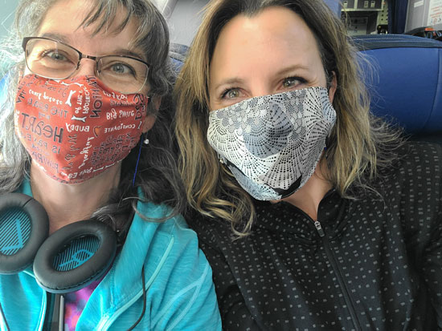
Leaving Montana, ready for some music and sunshine!
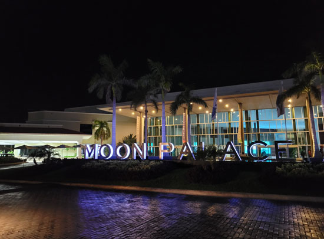
The event was held at the Moon Palace Resort, it was a lovely spot.
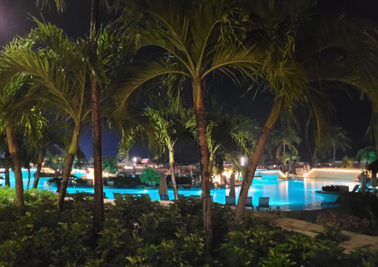
A look at one of the many pools lit up for the evening.
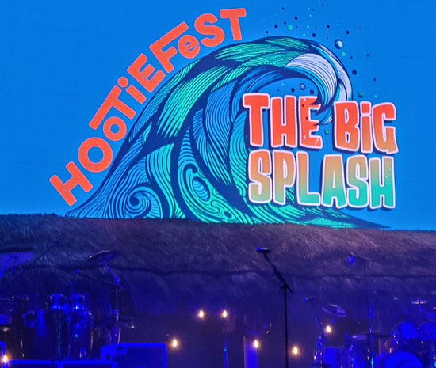
The first night was a little rainy, but we didn't mind.

We are ready to hear some great music!

Better Than Ezra, a New Orleans band that I love. They put on a great show.
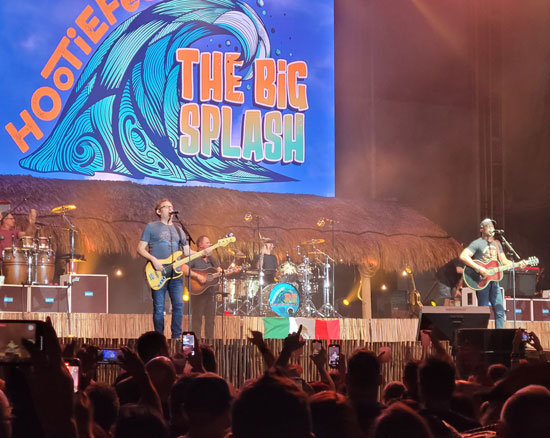
Hootie & the Blowfish played for three of the four nights, it was awesome.
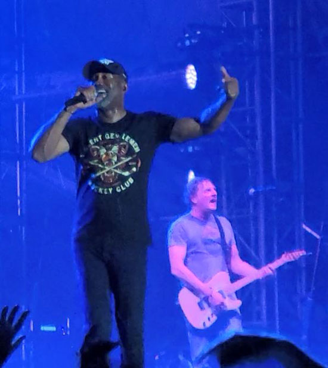
Darius & Mark, givin' their all

I didn't know him then, but in July of this year my sister and I met this guy, "VIP Lee." He is SO nice!

Fun times, and more to come!
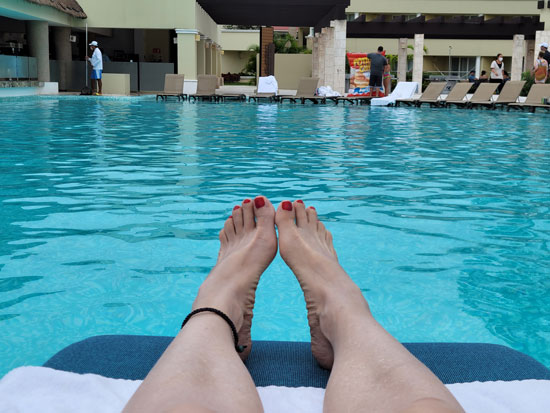
Enjoying the pool on our first full day at the resort.
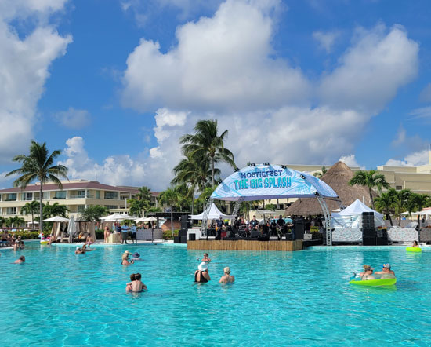
The sound check is just starting for Cowboy Mouth, one of my all-time favorite bands. Truly, right up there with Hootie & the Blowfish. I've probably seen Cowboy Mouth in concert 25 times. They rock the joint every single time!

A professional shot of the pool party show. I was front & center, but I can't see myself in this picture. It was so fun.

There's a thing where you throw a red spoon at a certain point in the song, "Everybody Loves Jill" Here the crowd is ready with our spoons. Mark Bryan was also on stage, he seemed to join in on every concert that weekend.
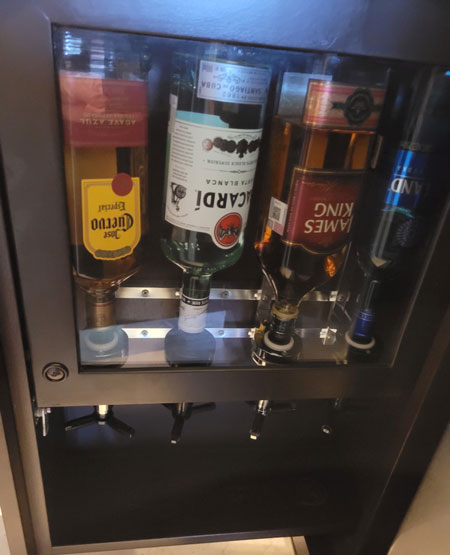
One of these was in every room! Bizarre. We opted out of the hard stuff so as not to miss out on any of the great music
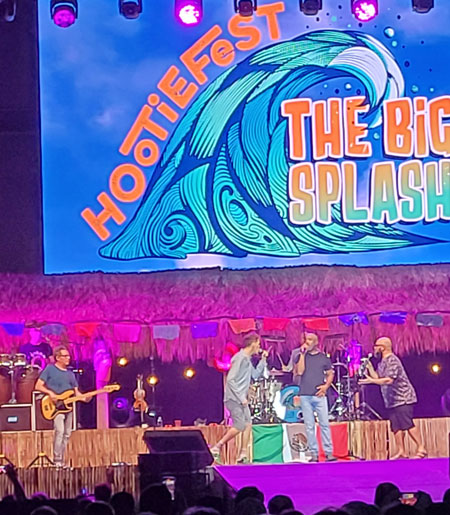
On the second night, a lot of other acts came in for a guest performance with the Hootie guys. Here are two of the Barenaked Ladies guys on stage. (I love BNL too!)
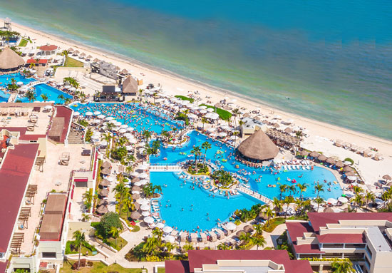
A bird's eye view of our part of the resort. There were two other parts similar to this one as well.

This chick rocked the surfing machine. They had daily contests on it that were fun to watch.
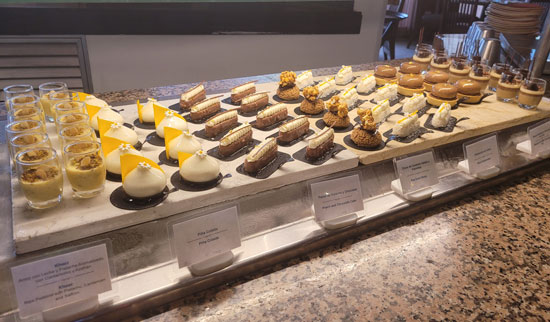
Half of the dessert bar at the lunch buffet. They tasted as amazing as they look.
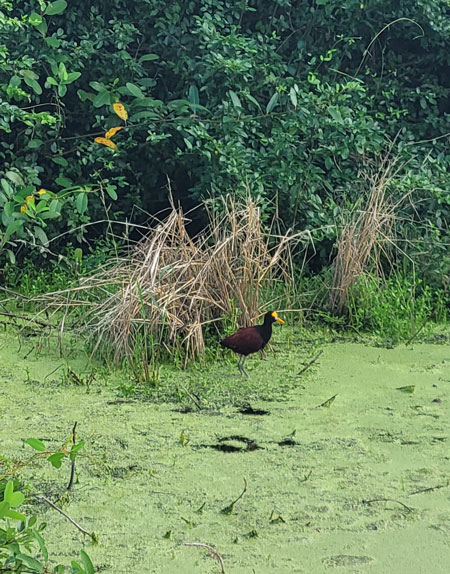
We took a guided bicycle tour of the resort one day. Here was a water bird we saw.

And an alligator as well
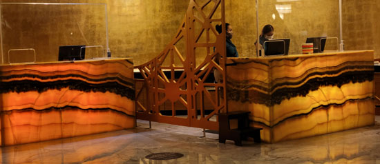
A view of the beautiful lobby

The entire ceiling was stained glass, so gorgeous.

Speaking of gorgeous, this was the coffee bar's sweets area.

And the gelato bar, Eric would have hurt himself here!
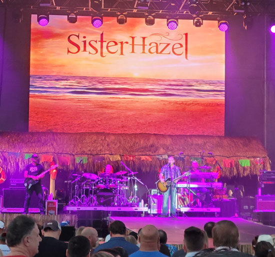
Sister Hazel put on another of my favorite shows we saw during Hootiefest. They were great.

Amy looking beautiful in the glowing palm trees.
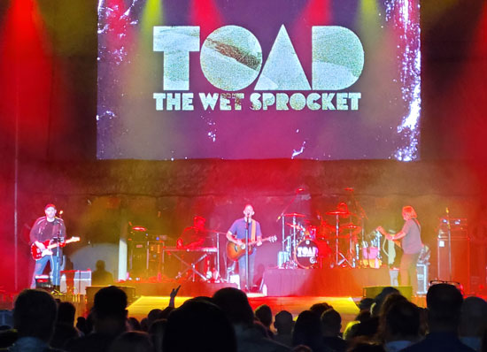
I only took pictures of my favorite bands, if you're wondering why I keep saying that I love each band's music. These guys did an amazing show.
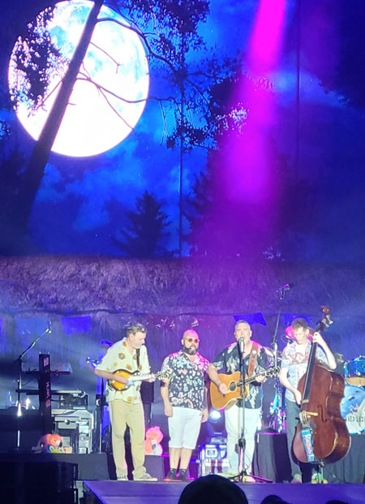
Speaking of amazing, this was my second time seeing BNL live and they knocked it out of the park both times. They are SO funny & talented at the same time.
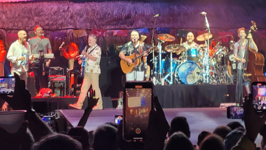
We laughed and danced through the whole show.

Fun times.

I had been holding my breath for the return trip's Covid test, thankfully I tested negative this time. Woo hoo!
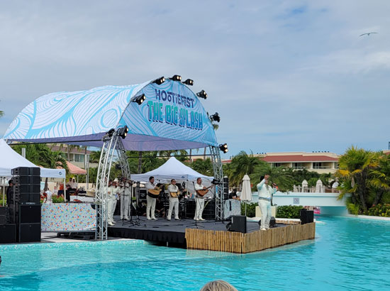
The last day's pool party was a full Mariachi band. They were really funny and fun as well.

It got a little chilly at the end of our stay, but we loved every minute of our time in sunny Mexico.

Here we are at the very nice Indian resturant. They set our food on fire, what service! :-

Some of the professional shots of the event. This is the Barenaked Ladies.

A view of the concert stage from above. I never heard a drone, but I expect that's how they got this.
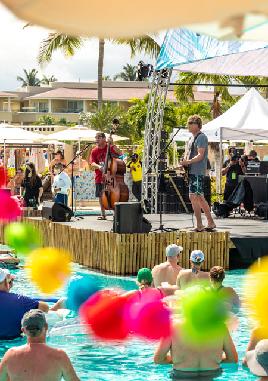
The other daytime concert was Occasional Milkshake, Mark Bryan's other band.
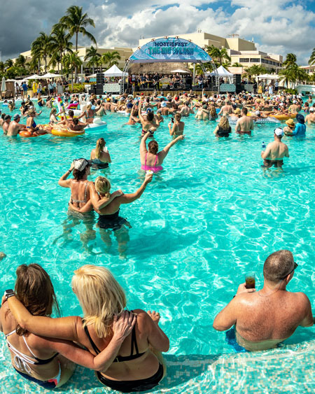
Another shot of the Cowboy Mouth concert.

Sister Hazel

Mark Bryan & Darius Rucker

Darius Rucker & Jim (Soni) Sonifeld

I think I took this picture, it cracks me up to see the number of empty glasses in that person's hand toward the right. I'm surprised they were still on their feet!
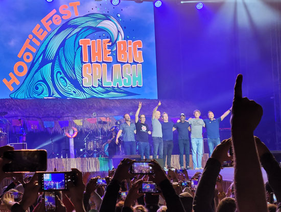
I took this picture too, after the last concert that closed out the event.
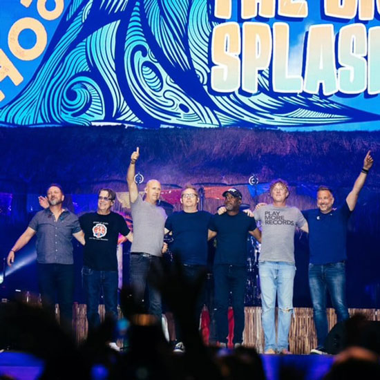
The professional version of this same shot.
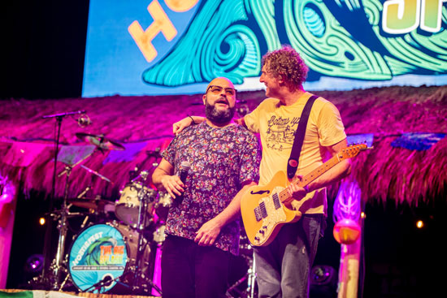
Mark Bryan with Tyler Stewart from BNL

Jim (Soni) Sonifeld

Darius Rucker with Jim Creeggan from BNL. Jim seems like he would be really fun to be around, he's always smiling.
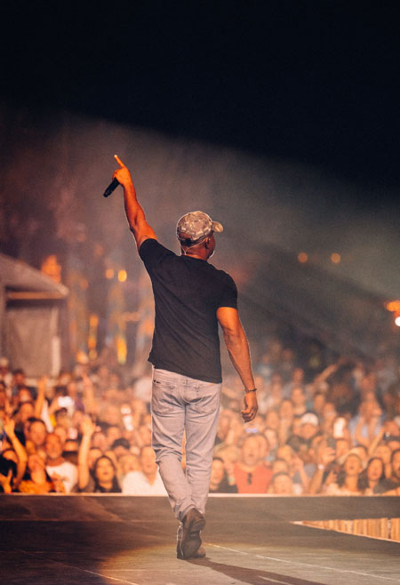
The band's view of the event.
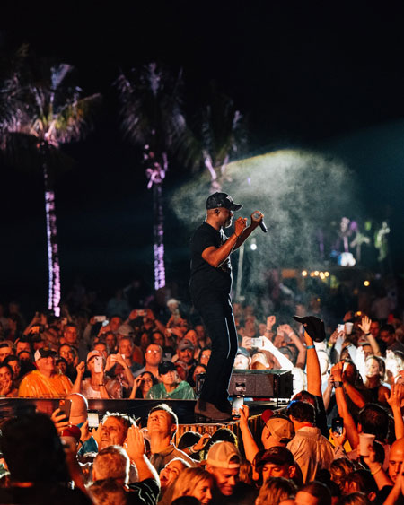
Dairus giving up a little dance.

HBF

Soni in action

Darius
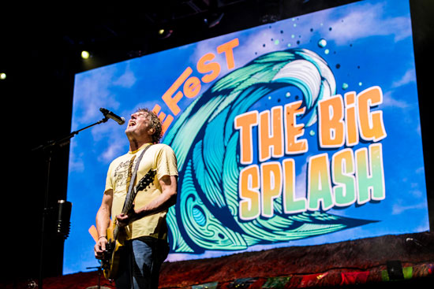
Mark

Mark

Amy on our balcony for our final morning in Mexico.
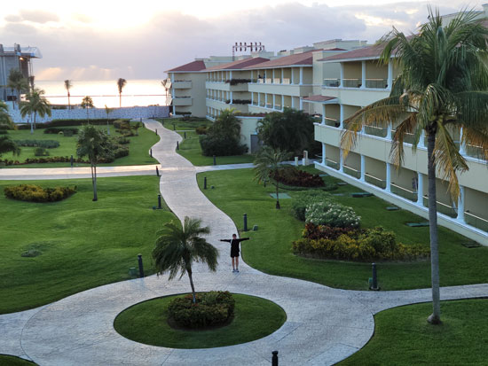
Now she's at ground level, heading out for our last wander around the resort.

Taking in the beautiful sights of the beautifully landscaped area.

And a long walk on the beach with the seagulls.
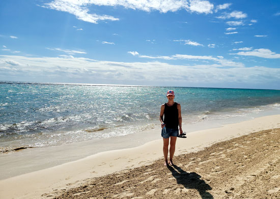
Enjoying our last chance to be in shorts and tank tops for a long time!